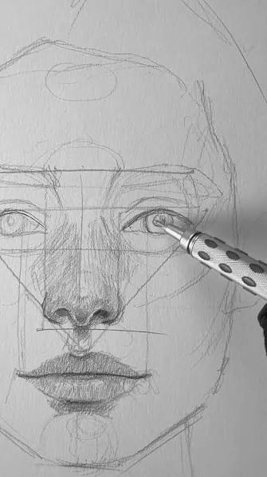

Galería de arte y producciones multimedia
1. Boceto inicial

2. Obra en proceso de entintado

3.Acuarela terminada en alta resolución

Un viaje ilustrado a través del tiempo, la memoria y las emociones.
